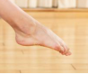
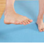
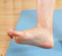
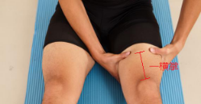
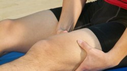
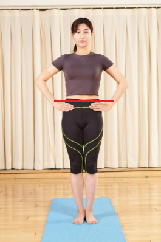
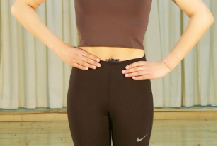

3
风险筛查
9
踝关节活动度测评--屈伸内翻外翻
受试者坐位，双腿伸直，双脚抬离地面,分别作踝关节以下动作
屈曲（绷脚背）

伸展（勾脚尖）

内翻（脚心向内相对）

外翻（脚心向外翻转）
不受限
受限
10
腿围测评

受试者用双手测量髌骨上缘一横掌处腿围，双手中指指尖在大腿后侧对齐
观察两拇指之间距离，两侧对比

明显不对称（大于5厘米）需就医
轻度不对称（2-5厘米）计1分
基本对称计0分
明显不对称（＞5cm）
轻度不对称（2-5cm）
对称
11
下肢长度测评

受试者双腿并拢直立

双手虎口放在骨盆上缘处
明显不等高需就医；略不等高（相差1-2指）计1分；双手水平为正常计0分。
明显不等高
略不等高（相差1-2指）
等高
上一步